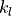
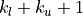
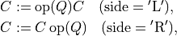
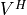
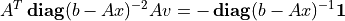

The LAPACK Interface¶
The module cvxopt.lapack includes functions for solving dense sets
of linear equations, for the corresponding matrix factorizations (LU,
Cholesky, LDLT),
for solving least-squares and least-norm problems, for
QR factorization, for symmetric eigenvalue problems, singular value
decomposition, and Schur factorization.
In this chapter we briefly describe the Python calling sequences. For further details on the underlying LAPACK functions we refer to the LAPACK Users’ Guide and manual pages.
The BLAS conventional storage scheme of the section Matrix Classes is used. As in the previous chapter, we omit from the function definitions less important arguments that are useful for selecting submatrices. The complete definitions are documented in the docstrings in the source code.
General Linear Equations¶
-
cvxopt.lapack.gesv(A, B[, ipiv = None])¶ Solves
where
 and
and  are real or complex matrices, with
square and nonsingular.
are real or complex matrices, with
square and nonsingular.The arguments
AandBmust have the same type ('d'or'z'). On entry,Bcontains the right-hand side; on exit it contains the solution  . The optional
argument
. The optional
argument ipivis an integer matrix of length at least .
If
.
If ipivis provided, thengesvsolves the system, replacesAwith the triangular factors in an LU factorization, and returns the permutation matrix inipiv. Ifipivis not specified, thengesvsolves the system but does not return the LU factorization and does not modifyA.Raises an
ArithmeticErrorif the matrix is singular.
-
cvxopt.lapack.getrf(A, ipiv)¶ LU factorization of a general, possibly rectangular, real or complex matrix,
where
is  by .
by .The argument
ipivis an integer matrix of length at least min{, }. On exit, the lower triangular part of
Ais replaced by , the upper triangular part by
, the upper triangular part by  ,
and the permutation matrix is returned in
,
and the permutation matrix is returned in ipiv.Raises an
ArithmeticErrorif the matrix is not full rank.
-
cvxopt.lapack.getrs(A, ipiv, B[, trans = 'N'])¶ Solves a general set of linear equations
given the LU factorization computed by
gesvorgetrf.On entry,
Aandipivmust contain the factorization as computed bygesvorgetrf. On entry,Bcontains the right-hand side; on exit it contains the solution .
Bmust have the same type asA.
-
cvxopt.lapack.getri(A, ipiv)¶ Computes the inverse of a matrix.
On entry,
Aandipivmust contain the factorization as computed bygesvorgetrf. On exit,Acontains the matrix inverse.
In the following example we compute
for randomly generated problem data, factoring the coefficient matrix once.
>>> from cvxopt import matrix, normal
>>> from cvxopt.lapack import gesv, getrs
>>> n = 10
>>> A = normal(n,n)
>>> b = normal(n)
>>> ipiv = matrix(0, (n,1))
>>> x = +b
>>> gesv(A, x, ipiv) # x = A^{-1}*b
>>> x2 = +b
>>> getrs(A, ipiv, x2, trans='T') # x2 = A^{-T}*b
>>> x += x2
Separate functions are provided for equations with band matrices.
-
cvxopt.lapack.gbsv(A, kl, B[, ipiv = None])¶ Solves
where
and are real or complex matrices, with
by and banded with 
subdiagonals.The arguments
AandBmust have the same type ('d'or'z'). On entry,Bcontains the right-hand side; on exit it contains the solution . The optional
argument ipivis an integer matrix of length at least.
If ipivis provided, thenAmust have rows. On entry the diagonals of are stored in rows
to of A, using the BLAS format for general band matrices (see the section Matrix Classes). On exit, the factorization is returned inAandipiv. Ifipivis not provided, thenAmust have  rows. On entry the diagonals of are
stored in the rows of A, following the standard BLAS format for general band matrices. In this case,gbsvdoes not modifyAand does not return the factorization.Raises an
ArithmeticErrorif the matrix is singular.
-
cvxopt.lapack.gbtrf(A, m, kl, ipiv)¶ LU factorization of a general
by real or complex
band matrix with subdiagonals.The matrix is stored using the BLAS format for general band matrices (see the section Matrix Classes), by providing the diagonals (stored as rows of a
 by matrix
by matrix A), the number of rows, and the number of subdiagonals
. The argument ipivis an integer matrix of length at least min{, }. On exit, Aandipivcontain the details of the factorization.Raises an
ArithmeticErrorif the matrix is not full rank.
-
cvxopt.lapack.gbtrs({A, kl, ipiv, B[, trans = 'N'])¶ Solves a set of linear equations

with
a general band matrix with subdiagonals,
given the LU factorization computed by
gbsvorgbtrf.On entry,
Aandipivmust contain the factorization as computed bygbsvorgbtrf. On entry,Bcontains the right-hand side; on exit it contains the solution .
Bmust have the same type asA.
As an example, we solve a linear equation with
>>> from cvxopt import matrix
>>> from cvxopt.lapack import gbsv, gbtrf, gbtrs
>>> n, kl, ku = 4, 2, 1
>>> A = matrix([[0., 1., 3., 6.], [2., 4., 7., 10.], [5., 8., 11., 0.], [9., 12., 0., 0.]])
>>> x = matrix(1.0, (n,1))
>>> gbsv(A, kl, x)
>>> print(x)
[ 7.14e-02]
[ 4.64e-01]
[-2.14e-01]
[-1.07e-01]
The code below illustrates how one can reuse the factorization returned
by gbsv.
>>> Ac = matrix(0.0, (2*kl+ku+1,n))
>>> Ac[kl:,:] = A
>>> ipiv = matrix(0, (n,1))
>>> x = matrix(1.0, (n,1))
>>> gbsv(Ac, kl, x, ipiv) # solves A*x = 1
>>> print(x)
[ 7.14e-02]
[ 4.64e-01]
[-2.14e-01]
[-1.07e-01]
>>> x = matrix(1.0, (n,1))
>>> gbtrs(Ac, kl, ipiv, x, trans='T') # solve A^T*x = 1
>>> print(x)
[ 7.14e-02]
[ 2.38e-02]
[ 1.43e-01]
[-2.38e-02]
An alternative method uses gbtrf for the
factorization.
>>> Ac[kl:,:] = A
>>> gbtrf(Ac, n, kl, ipiv)
>>> x = matrix(1.0, (n,1))
>>> gbtrs(Ac, kl, ipiv, x) # solve A^T*x = 1
>>> print(x)
[ 7.14e-02]
[ 4.64e-01]
[-2.14e-01]
[-1.07e-01]
>>> x = matrix(1.0, (n,1))
>>> gbtrs(Ac, kl, ipiv, x, trans='T') # solve A^T*x = 1
>>> print(x)
[ 7.14e-02]
[ 2.38e-02]
[ 1.43e-01]
[-2.38e-02]
The following functions can be used for tridiagonal matrices. They use a simpler matrix format, with the diagonals stored in three separate vectors.
-
cvxopt.lapack.gtsv(dl, d, du, B))¶ Solves
where
is an by tridiagonal matrix.The subdiagonal of
is stored as a matrix dlof length , the diagonal is stored as a matrix
, the diagonal is stored as a matrix dof length, and the superdiagonal is stored as a matrix duof length. The four arguments must have the same type
('d'or'z'). On exitdl,d,duare overwritten with the details of the LU factorization of.
On entry, Bcontains the right-hand side; on exit it
contains the solution .Raises an
ArithmeticErrorif the matrix is singular.
-
cvxopt.lapack.gttrf(dl, d, du, du2, ipiv)¶ LU factorization of an
by tridiagonal matrix.The subdiagonal of
is stored as a matrix dlof length, the diagonal is stored as a matrix dof length, and the superdiagonal is stored as a matrix duof length. dl,danddumust have the same type.du2is a matrix of length , and of the same type asdl.ipivis an'i'matrix of length.
On exit, the five arguments contain the details of the factorization.Raises an
ArithmeticErrorif the matrix is singular.
-
cvxopt.lapack.gttrs(dl, d, du, du2, ipiv, B[, trans = 'N'])¶ Solves a set of linear equations
where
is an by tridiagonal matrix.The arguments
dl,d,du,du2, andipivcontain the details of the LU factorization as returned bygttrf. On entry,Bcontains the right-hand side; on exit it
contains the solution . Bmust have the same type as the other arguments.
Positive Definite Linear Equations¶
-
cvxopt.lapack.posv(A, B[, uplo = 'L'])¶ Solves
where
is a real symmetric or complex Hermitian positive
definite matrix.On exit,
Bis replaced by the solution, andAis overwritten with the Cholesky factor. The matricesAandBmust have the same type ('d'or'z').Raises an
ArithmeticErrorif the matrix is not positive definite.
-
cvxopt.lapack.potrf(A[, uplo = 'L'])¶ Cholesky factorization
of a positive definite real symmetric or complex Hermitian matrix
.On exit, the lower triangular part of
A(ifuplois'L') or the upper triangular part (ifuplois'U') is overwritten with the Cholesky factor or its (conjugate) transpose.Raises an
ArithmeticErrorif the matrix is not positive definite.
-
cvxopt.lapack.potrs(A, B[, uplo = 'L'])¶ Solves a set of linear equations

with a positive definite real symmetric or complex Hermitian matrix, given the Cholesky factorization computed by
posvorpotrf.On entry,
Acontains the triangular factor, as computed byposvorpotrf. On exit,Bis replaced by the solution.Bmust have the same type asA.
-
cvxopt.lapack.potri(A[, uplo = 'L'])¶ Computes the inverse of a positive definite matrix.
On entry,
Acontains the Cholesky factorization computed bypotrforposv. On exit, it contains the matrix inverse.
As an example, we use posv to solve the
linear system
(1)¶
by block-elimination. We first pick a random problem.
>>> from cvxopt import matrix, div, normal, uniform
>>> from cvxopt.blas import syrk, gemv
>>> from cvxopt.lapack import posv
>>> m, n = 100, 50
>>> A = normal(m,n)
>>> b1, b2 = normal(m), normal(n)
>>> d = uniform(m)
We then solve the equations
>>> Asc = div(A, d[:, n*[0]]) # Asc := diag(d)^{-1}*A
>>> B = matrix(0.0, (n,n))
>>> syrk(Asc, B, trans='T') # B := Asc^T * Asc = A^T * diag(d)^{-2} * A
>>> x1 = div(b1, d) # x1 := diag(d)^{-1}*b1
>>> x2 = +b2
>>> gemv(Asc, x1, x2, trans='T', beta=1.0) # x2 := x2 + Asc^T*x1 = b2 + A^T*diag(d)^{-2}*b1
>>> posv(B, x2) # x2 := B^{-1}*x2 = B^{-1}*(b2 + A^T*diag(d)^{-2}*b1)
>>> gemv(Asc, x2, x1, beta=-1.0) # x1 := Asc*x2 - x1 = diag(d)^{-1} * (A*x2 - b1)
>>> x1 = div(x1, d) # x1 := diag(d)^{-1}*x1 = diag(d)^{-2} * (A*x2 - b1)
There are separate routines for equations with positive definite band matrices.
-
cvxopt.lapack.pbsv(A, B[, uplo='L'])¶ Solves
where
is a real symmetric or complex Hermitian positive
definite band matrix.On entry, the diagonals of
are stored in A, using the BLAS format for symmetric or Hermitian band matrices (see section Matrix Classes). On exit,Bis replaced by the solution, andAis overwritten with the Cholesky factor (in the BLAS format for triangular band matrices). The matricesAandBmust have the same type ('d'or'z').Raises an
ArithmeticErrorif the matrix is not positive definite.
-
cvxopt.lapack.pbtrf(A[, uplo = 'L'])¶ Cholesky factorization
of a positive definite real symmetric or complex Hermitian band matrix
.On entry, the diagonals of
are stored in A, using the BLAS format for symmetric or Hermitian band matrices. On exit,Acontains the Cholesky factor, in the BLAS format for triangular band matrices.Raises an
ArithmeticErrorif the matrix is not positive definite.
-
cvxopt.lapack.pbtrs(A, B[, uplo = 'L'])¶ Solves a set of linear equations

with a positive definite real symmetric or complex Hermitian band matrix, given the Cholesky factorization computed by
pbsvorpbtrf.On entry,
Acontains the triangular factor, as computed bypbsvorpbtrf. On exit,Bis replaced by the solution.Bmust have the same type asA.
The following functions are useful for tridiagonal systems.
-
cvxopt.lapack.ptsv(d, e, B)¶ Solves
where
is an by positive definite real
symmetric or complex Hermitian tridiagonal matrix.The diagonal of
is stored as a 'd'matrixdof length and its subdiagonal as a 'd'or'z'matrixeof length. The arguments eandBmust have the same type. On exitdcontains the diagonal elements of in the LDLT or LDLH factorization of, and
econtains the subdiagonal elements of the unit lower bidiagonal matrix. Bis overwritten with the solution.
Raises an ArithmeticErrorif the matrix is singular.
-
cvxopt.lapack.pttrf(d, e)¶ LDLT or LDLH factorization of an
by positive
definite real symmetric or complex Hermitian tridiagonal matrix
.On entry, the argument
dis a'd'matrix with the diagonal elements of. The argument eis'd'or'z'matrix containing the subdiagonal of. On exit
dcontains the diagonal elements of , andecontains the subdiagonal elements of the unit lower bidiagonal matrix.Raises an
ArithmeticErrorif the matrix is singular.
-
cvxopt.lapack.pttrs(d, e, B[, uplo = 'L'])¶ Solves a set of linear equations
where
is an by positive definite real
symmetric or complex Hermitian tridiagonal matrix, given its
LDLT
or
LDLH
factorization.The argument
dis the diagonal of the diagonal matrix . The argumentuploonly matters for complex matrices. Ifuplois'L', then on exitecontains the subdiagonal elements of the unit bidiagonal matrix. If uplois'U', thenecontains the complex conjugates of the elements of the unit bidiagonal matrix. On exit, Bis overwritten with the solution. Bmust have the same type ase.
Symmetric and Hermitian Linear Equations¶
-
cvxopt.lapack.sysv(A, B[, ipiv = None, uplo = 'L'])¶ Solves
where
is a real or complex symmetric matrix of order
.On exit,
Bis replaced by the solution. The matricesAandBmust have the same type ('d'or'z'). The optional argumentipivis an integer matrix of length at least equal to. If ipivis provided,sysvsolves the system and returns the factorization inAandipiv. Ifipivis not specified,sysvsolves the system but does not return the factorization and does not modifyA.Raises an
ArithmeticErrorif the matrix is singular.
-
cvxopt.lapack.sytrf(A, ipiv[, uplo = 'L'])¶ LDLT factorization
of a real or complex symmetric matrix
of order .ipivis an'i'matrix of length at least. On
exit, Aandipivcontain the factorization.Raises an
ArithmeticErrorif the matrix is singular.
-
cvxopt.lapack.sytrs(A, ipiv, B[, uplo = 'L'])¶ Solves
given the LDLT factorization computed by
sytrforsysv.Bmust have the same type asA.
-
cvxopt.lapack.sytri(A, ipiv[, uplo = 'L'])¶ Computes the inverse of a real or complex symmetric matrix.
On entry,
Aandipivcontain the LDLT factorization computed bysytrforsysv. On exit,Acontains the inverse.
-
cvxopt.lapack.hesv(A, B[, ipiv = None, uplo = 'L'])¶ Solves
where
is a real symmetric or complex Hermitian of order
.On exit,
Bis replaced by the solution. The matricesAandBmust have the same type ('d'or'z'). The optional argumentipivis an integer matrix of length at least. If ipivis provided, thenhesvsolves the system and returns the factorization inAandipiv. Ifipivis not specified, thenhesvsolves the system but does not return the factorization and does not modifyA.Raises an
ArithmeticErrorif the matrix is singular.
-
cvxopt.lapack.hetrf(A, ipiv[, uplo = 'L'])¶ LDLH factorization
of a real symmetric or complex Hermitian matrix of order
.
ipivis an'i'matrix of length at least.
On exit, Aandipivcontain the factorization.Raises an
ArithmeticErrorif the matrix is singular.
-
cvxopt.lapack.hetrs(A, ipiv, B[, uplo = 'L'])¶ Solves
-
cvxopt.lapack.hetri(A, ipiv[, uplo = 'L'])¶ Computes the inverse of a real symmetric or complex Hermitian matrix.
On entry,
Aandipivcontain the LDLH factorization computed byhetrforhesv. On exit,Acontains the inverse.
As an example we solve the KKT system (1).
>>> from cvxopt.lapack import sysv
>>> K = matrix(0.0, (m+n,m+n))
>>> K[: (m+n)*m : m+n+1] = -d**2
>>> K[:m, m:] = A
>>> x = matrix(0.0, (m+n,1))
>>> x[:m], x[m:] = b1, b2
>>> sysv(K, x, uplo='U')
Triangular Linear Equations¶
-
cvxopt.lapack.trtrs(A, B[, uplo = 'L', trans = 'N', diag = 'N'])¶ Solves a triangular set of equations
where
is real or complex and triangular of order ,
and is a matrix with rows.AandBare matrices with the same type ('d'or'z').trtrsis similar toblas.trsm, except that it raises anArithmeticErrorif a diagonal element ofAis zero (whereasblas.trsmreturnsinfvalues).
-
cvxopt.lapack.trtri(A[, uplo = 'L', diag = 'N'])¶ Computes the inverse of a real or complex triangular matrix
.
On exit, Acontains the inverse.
-
cvxopt.lapack.tbtrs(A, B[, uplo = 'L', trans = 'T', diag = 'N'])¶ Solves a triangular set of equations
where
is real or complex triangular band matrix of order
, and is a matrix with rows.The diagonals of
are stored in Ausing the BLAS conventions for triangular band matrices.AandBare matrices with the same type ('d'or'z'). On exit,Bis replaced by the solution.
Least-Squares and Least-Norm Problems¶
-
cvxopt.lapack.gels(A, B[, trans = 'N'])¶ Solves least-squares and least-norm problems with a full rank
by matrix .transis'N'. If is greater than or equal
to , gelssolves the least-squares problemIf
is less than or equal to , gelssolves the least-norm problemtransis'T'or'C'andAandBare real. If is greater than or equal to ,
gelssolves the least-norm problemIf
is less than or equal to , gelssolves the least-squares problemtransis'C'andAandBare complex. If is greater than or equal to , gelssolves the least-norm problemIf
is less than or equal to , gelssolves the least-squares problem
AandBmust have the same typecode ('d'or'z').trans='T'is not allowed ifAis complex. On exit, the solution is stored as the leading
submatrix of B. The matrixAis overwritten with details of the QR or the LQ factorization of.Note that
gelsdoes not check whether is full rank.
The following functions compute QR and LQ factorizations.
-
cvxopt.lapack.geqrf(A, tau)¶ QR factorization of a real or complex matrix
A:If
is by , then  is by
and orthogonal/unitary, and
is by
and orthogonal/unitary, and  is by
and upper triangular (if is greater than or equal
to ), or upper trapezoidal (if is less than or
equal to ).
is by
and upper triangular (if is greater than or equal
to ), or upper trapezoidal (if is less than or
equal to ).tauis a matrix of the same type asAand of length min{, }. On exit, is stored in the upper
triangular/trapezoidal part of A. The matrix is stored
as a product of min{, } elementary reflectors in
the first min{, } columns of Aand intau.
-
cvxopt.lapack.gelqf(A, tau)¶ LQ factorization of a real or complex matrix
A:If
is by , then is by
and orthogonal/unitary, and is by
and lower triangular (if is less than or equal to
), or lower trapezoidal (if is greater than or equal
to ).tauis a matrix of the same type asAand of length min{, }. On exit, is stored in the lower
triangular/trapezoidal part of A. The matrix is stored
as a product of min{, } elementary reflectors in the
first min{, } rows of Aand intau.
-
cvxopt.lapack.geqp3(A, jpvt, tau)¶ QR factorization with column pivoting of a real or complex matrix
:If
is by , then is
by and orthogonal/unitary, and is by
and upper triangular (if is greater than or equal
to ), or upper trapezoidal (if is less than or equal
to ).tauis a matrix of the same type asAand of length min{, }. jpvtis an integer matrix of length. On entry, if jpvt[k]is nonzero, then column of is permuted to the front of .
Otherwise, column is a free column.
of is permuted to the front of .
Otherwise, column is a free column.On exit,
jpvtcontains the permutation : the operation
is equivalent to
: the operation
is equivalent to A[:, jpvt-1]. is stored
in the upper triangular/trapezoidal part of A. The matrix is stored as a product of min{, }
elementary reflectors in the first min{,:math:n} columns
of Aand intau.
In most applications, the matrix is not needed explicitly, and
it is sufficient to be able to make products with or its
transpose. The functions unmqr and
ormqr multiply a matrix
with the orthogonal matrix computed by
geqrf.
-
cvxopt.lapack.unmqr(A, tau, C[, side = 'L', trans = 'N'])¶ Product with a real orthogonal or complex unitary matrix:

where
If
Ais by , then is square of order
and orthogonal or unitary. is stored in the first
min{, } columns of Aand intauas a product of min{, } elementary reflectors, as
computed by geqrf. The matricesA,tau, andCmust have the same type.trans='T'is only allowed if the typecode is'd'.
-
cvxopt.lapack.ormqr(A, tau, C[, side = 'L', trans = 'N'])¶ Identical to
unmqrbut works only for real matrices, and the possible values oftransare'N'and'T'.
As an example, we solve a least-squares problem by a direct call to
gels, and by separate calls to
geqrf,
ormqr, and
trtrs.
>>> from cvxopt import blas, lapack, matrix, normal
>>> m, n = 10, 5
>>> A, b = normal(m,n), normal(m,1)
>>> x1 = +b
>>> lapack.gels(+A, x1) # x1[:n] minimizes || A*x - b ||_2
>>> tau = matrix(0.0, (n,1))
>>> lapack.geqrf(A, tau) # A = [Q1, Q2] * [R1; 0]
>>> x2 = +b
>>> lapack.ormqr(A, tau, x2, trans='T') # x2 := [Q1, Q2]' * x2
>>> lapack.trtrs(A[:n,:], x2, uplo='U') # x2[:n] := R1^{-1} * x2[:n]
>>> blas.nrm2(x1[:n] - x2[:n])
3.0050798580569307e-16
The next two functions make products with the orthogonal matrix computed
by gelqf.
-
cvxopt.lapack.unmlq(A, tau, C[, side = 'L', trans = 'N'])¶ Product with a real orthogonal or complex unitary matrix:
where
If
Ais by , then is square of order
and orthogonal or unitary. is stored in the first
min{, } rows of Aand intauas a product of min{, } elementary reflectors, as computed by
gelqf. The matricesA,tau, andCmust have the same type.trans='T'is only allowed if the typecode is'd'.
-
cvxopt.lapack.ormlq(A, tau, C[, side = 'L', trans = 'N'])¶ Identical to
unmlqbut works only for real matrices, and the possible values oftransor'N'and'T'.
As an example, we solve a least-norm problem by a direct call to
gels, and by separate calls to
gelqf,
ormlq,
and trtrs.
>>> from cvxopt import blas, lapack, matrix, normal
>>> m, n = 5, 10
>>> A, b = normal(m,n), normal(m,1)
>>> x1 = matrix(0.0, (n,1))
>>> x1[:m] = b
>>> lapack.gels(+A, x1) # x1 minimizes ||x||_2 subject to A*x = b
>>> tau = matrix(0.0, (m,1))
>>> lapack.gelqf(A, tau) # A = [L1, 0] * [Q1; Q2]
>>> x2 = matrix(0.0, (n,1))
>>> x2[:m] = b # x2 = [b; 0]
>>> lapack.trtrs(A[:,:m], x2) # x2[:m] := L1^{-1} * x2[:m]
>>> lapack.ormlq(A, tau, x2, trans='T') # x2 := [Q1, Q2]' * x2
>>> blas.nrm2(x1 - x2)
0.0
Finally, if the matrix is needed explicitly, it can be generated
from the output of geqrf and
gelqf using one of the following functions.
-
cvxopt.lapack.ungqr(A, tau)¶ If
Ahas size by , and tauhas length, then, on entry, the first kcolumns of the matrixAand the entries oftaucontai an unitary or orthogonal matrix of order , as computed by
geqrf. On exit, the first min{, } columns of are contained
in the leading columns of A.
-
cvxopt.lapack.unglq(A, tau)¶ If
Ahas size by , and tauhas length, then, on entry, the first krows of the matrixAand the entries oftaucontain a unitary or orthogonal matrix of order , as computed by
gelqf. On exit, the first min{, } rows of are
contained in the leading rows of A.
We illustrate this with the QR factorization of the matrix
>>> from cvxopt import matrix, lapack
>>> A = matrix([ [6., 6., 19., 6.], [-5., 3., -2., -10.], [4., -4., 7., -5] ])
>>> m, n = A.size
>>> tau = matrix(0.0, (n,1))
>>> lapack.geqrf(A, tau)
>>> print(A[:n, :]) # Upper triangular part is R.
[-2.17e+01 5.08e+00 -4.76e+00]
[ 2.17e-01 -1.06e+01 -2.66e+00]
[ 6.87e-01 3.12e-01 -8.74e+00]
>>> Q1 = +A
>>> lapack.orgqr(Q1, tau)
>>> print(Q1)
[-2.77e-01 3.39e-01 -4.10e-01]
[-2.77e-01 -4.16e-01 7.35e-01]
[-8.77e-01 -2.32e-01 -2.53e-01]
[-2.77e-01 8.11e-01 4.76e-01]
>>> Q = matrix(0.0, (m,m))
>>> Q[:, :n] = A
>>> lapack.orgqr(Q, tau)
>>> print(Q) # Q = [ Q1, Q2]
[-2.77e-01 3.39e-01 -4.10e-01 -8.00e-01]
[-2.77e-01 -4.16e-01 7.35e-01 -4.58e-01]
[-8.77e-01 -2.32e-01 -2.53e-01 3.35e-01]
[-2.77e-01 8.11e-01 4.76e-01 1.96e-01]
The orthogonal matrix in the factorization
can be generated as follows.
>>> A = matrix([ [3., -2., 9.], [-16., -12., 19.], [-10., -3., 6.], [-1., 4., -6.] ])
>>> m, n = A.size
>>> tau = matrix(0.0, (m,1))
>>> lapack.geqrf(A, tau)
>>> R = +A
>>> print(R) # Upper trapezoidal part is [R1, R2].
[-9.70e+00 -1.52e+01 -3.09e+00 6.70e+00]
[-1.58e-01 2.30e+01 1.14e+01 -1.92e+00]
[ 7.09e-01 -5.57e-01 2.26e+00 2.09e+00]
>>> lapack.orgqr(A, tau)
>>> print(A[:, :m]) # Q is in the first m columns of A.
[-3.09e-01 -8.98e-01 -3.13e-01]
[ 2.06e-01 -3.85e-01 9.00e-01]
[-9.28e-01 2.14e-01 3.04e-01]
Symmetric and Hermitian Eigenvalue Decomposition¶
The first four routines compute all or selected eigenvalues and
eigenvectors of a real symmetric matrix :

-
cvxopt.lapack.syev(A, W[, jobz = 'N', uplo = 'L'])¶ Eigenvalue decomposition of a real symmetric matrix of order
.Wis a real matrix of length at least. On exit, Wcontains the eigenvalues in ascending order. Ifjobzis'V', the eigenvectors are also computed and returned inA. Ifjobzis'N', the eigenvectors are not returned and the contents ofAare destroyed.Raises an
ArithmeticErrorif the eigenvalue decomposition fails.
-
cvxopt.lapack.syevd(A, W[, jobz = 'N', uplo = 'L'])¶ This is an alternative to
syev, based on a different algorithm. It is faster on large problems, but also uses more memory.
-
cvxopt.lapack.syevx(A, W[, jobz = 'N', range = 'A', uplo = 'L', vl = 0.0, vu = 0.0, il = 1, iu = 1, Z = None])¶ Computes selected eigenvalues and eigenvectors of a real symmetric matrix of order
.Wis a real matrix of length at least. On exit, Wcontains the eigenvalues in ascending order. Ifrangeis'A', all the eigenvalues are computed. Ifrangeis'I', eigenvalues through are computed, where . Ifrangeis'V', the eigenvalues in the interval are computed.If
jobzis'V', the (normalized) eigenvectors are computed, and returned inZ. Ifjobzis'N', the eigenvectors are not computed. In both cases, the contents ofAare destroyed on exit.Zis optional (and not referenced) ifjobzis'N'. It is required ifjobzis'V'and must have at least columns if rangeis'A'or'V'and at least columns ifrangeis'I'.syevxreturns the number of computed eigenvalues.
-
cvxopt.lapack.syevr(A, W[, jobz = 'N', range = 'A', uplo = 'L', vl = 0.0, vu = 0.0, il = 1, iu = n, Z = None])¶ This is an alternative to
syevx.syevris the most recent LAPACK routine for symmetric eigenvalue problems, and expected to supersede the three other routines in future releases.
The next four routines can be used to compute eigenvalues and eigenvectors for complex Hermitian matrices:
For real symmetric matrices they are identical to the corresponding
syev* routines.
-
cvxopt.lapack.heev(A, W[, jobz = 'N', uplo = 'L'])¶ Eigenvalue decomposition of a real symmetric or complex Hermitian matrix of order
.The calling sequence is identical to
syev, except thatAcan be real or complex.
-
cvxopt.lapack.heevx(A, W[, jobz = 'N', range = 'A', uplo = 'L', vl = 0.0, vu = 0.0, il = 1, iu = n, Z = None])¶ Computes selected eigenvalues and eigenvectors of a real symmetric or complex Hermitian matrix.
The calling sequence is identical to
syevx, except thatAcan be real or complex.Zmust have the same type asA.
Generalized Symmetric Definite Eigenproblems¶
Three types of generalized eigenvalue problems can be solved:
(2)¶
with and real symmetric or complex Hermitian, and
is positive definite. The matrix of eigenvectors is normalized
as follows:
-
cvxopt.lapack.sygv(A, B, W[, itype = 1, jobz = 'N', uplo = 'L'])¶ Solves the generalized eigenproblem (2) for real symmetric matrices of order
, stored in real matrices AandB.itypeis an integer with possible values 1, 2, 3, and specifies the type of eigenproblem.Wis a real matrix of length at least. On exit, it contains the eigenvalues in ascending order.
On exit, Bcontains the Cholesky factor of. If jobzis'V', the eigenvectors are computed and returned inA. Ifjobzis'N', the eigenvectors are not returned and the contents ofAare destroyed.
Singular Value Decomposition¶
-
cvxopt.lapack.gesvd(A, S[, jobu = 'N', jobvt = 'N', U = None, Vt = None])¶ Singular value decomposition
of a real or complex
by matrix .Sis a real matrix of length at least min{, }.
On exit, its first min{, } elements are the
singular values in descending order.The argument
jobucontrols how many left singular vectors are computed. The possible values are'N','A','S'and'O'. Ifjobuis'N', no left singular vectors are computed. Ifjobuis'A', all left singular vectors are computed and returned as columns ofU. Ifjobuis'S', the first min{, } left
singular vectors are computed and returned as columns of U. Ifjobuis'O', the first min{, } left
singular vectors are computed and returned as columns of A. The argumentUis None(ifjobuis'N'or'A') or a matrix of the same type asA.The argument
jobvtcontrols how many right singular vectors are computed. The possible values are'N','A','S'and'O'. Ifjobvtis'N', no right singular vectors are computed. Ifjobvtis'A', all right singular vectors are computed and returned as rows ofVt. Ifjobvtis'S', the first min{, }
right singular vectors are computed and their (conjugate) transposes
are returned as rows of Vt. Ifjobvtis'O', the first min{, } right singular vectors are computed
and their (conjugate) transposes are returned as rows of A. Note that the (conjugate) transposes of the right singular vectors (i.e., the matrix ) are returned inVtorA. The argumentVtcan beNone(ifjobvtis'N'or'A') or a matrix of the same type asA.On exit, the contents of
Aare destroyed.
-
cvxopt.lapack.gesdd(A, S[, jobz = 'N', U = None, Vt = None])¶ Singular value decomposition of a real or complex
by
matrix.. This function is based on a divide-and-conquer
algorithm and is faster than gesvd.Sis a real matrix of length at least min{, }.
On exit, its first min{, } elements are the
singular values in descending order.The argument
jobzcontrols how many singular vectors are computed. The possible values are'N','A','S'and'O'. Ifjobzis'N', no singular vectors are computed. Ifjobzis'A', all left singular
vectors are computed and returned as columns of Uand all right singular vectors are computed and returned as rows of
Vt. Ifjobzis'S', the first min{, } left and right singular vectors are computed
and returned as columns of Uand rows ofVt. Ifjobzis'O'and is greater than or equal
to , the first left singular vectors are returned as
columns of Aand the right singular vectors are returned
as rows of Vt. Ifjobzis'O'and is less
than , the left singular vectors are returned as
columns of Uand the first right singular vectors are
returned as rows of A. Note that the (conjugate) transposes of the right singular vectors are returned inVtorA.The argument
Ucan beNone(ifjobzis'N'or'A'ofjobzis'O'and is greater
than or equal to ) or a matrix of the same type as A. The argumentVtcan be None(ifjobzis'N'or'A'orjobzis'O'and :math`m` is less than) or a matrix of the same type as A.On exit, the contents of
Aare destroyed.
Schur and Generalized Schur Factorization¶
-
cvxopt.lapack.gees(A[, w = None, V = None, select = None])¶ Computes the Schur factorization
of a real or complex
by matrix .If
is real, the matrix of Schur vectors is
orthogonal, and  is a real upper quasi-triangular matrix with
1 by 1 or 2 by 2 diagonal blocks. The 2 by 2 blocks correspond to
complex conjugate pairs of eigenvalues of .
If is complex, the matrix of Schur vectors is
unitary, and is a complex upper triangular matrix with the
eigenvalues of on the diagonal.
is a real upper quasi-triangular matrix with
1 by 1 or 2 by 2 diagonal blocks. The 2 by 2 blocks correspond to
complex conjugate pairs of eigenvalues of .
If is complex, the matrix of Schur vectors is
unitary, and is a complex upper triangular matrix with the
eigenvalues of on the diagonal.The optional argument
wis a complex matrix of length at least. If it is provided, the eigenvalues of Aare returned inw. The optional argumentVis an by
matrix of the same type as A. If it is provided, then the Schur vectors are returned inV.The argument
selectis an optional ordering routine. It must be a Python function that can be called asf(s)with a complex arguments, and returnsTrueorFalse. The eigenvalues for whichselectreturnsTruewill be selected to appear first along the diagonal. (In the real Schur factorization, if either one of a complex conjugate pair of eigenvalues is selected, then both are selected.)On exit,
Ais replaced with the matrix. The function
geesreturns an integer equal to the number of eigenvalues that were selected by the ordering routine. IfselectisNone, thengeesreturns 0.
As an example we compute the complex Schur form of the matrix
>>> A = matrix([[-7., 5., 11., -4., 13.], [-11., -3., 11., 8., -19.], [-6., 3., -5., 0., -12.],
[-4., -12., -14., 8., -8.], [11., 0., 9., 6., 10.]])
>>> S = matrix(A, tc='z')
>>> w = matrix(0.0, (5,1), 'z')
>>> lapack.gees(S, w)
0
>>> print(S)
[ 5.67e+00+j1.69e+01 -2.13e+01+j2.85e+00 1.40e+00+j5.88e+00 -4.19e+00+j2.05e-01 3.19e+00-j1.01e+01]
[ 0.00e+00-j0.00e+00 5.67e+00-j1.69e+01 1.09e+01+j5.93e-01 -3.29e+00-j1.26e+00 -1.26e+01+j7.80e+00]
[ 0.00e+00-j0.00e+00 0.00e+00-j0.00e+00 1.27e+01+j3.43e-17 -6.83e+00+j2.18e+00 5.31e+00-j1.69e+00]
[ 0.00e+00-j0.00e+00 0.00e+00-j0.00e+00 0.00e+00-j0.00e+00 -1.31e+01-j0.00e+00 -2.60e-01-j0.00e+00]
[ 0.00e+00-j0.00e+00 0.00e+00-j0.00e+00 0.00e+00-j0.00e+00 0.00e+00-j0.00e+00 -7.86e+00-j0.00e+00]
>>> print(w)
[ 5.67e+00+j1.69e+01]
[ 5.67e+00-j1.69e+01]
[ 1.27e+01+j3.43e-17]
[-1.31e+01-j0.00e+00]
[-7.86e+00-j0.00e+00]
An ordered Schur factorization with the eigenvalues in the left half of the complex plane ordered first, can be computed as follows.
>>> S = matrix(A, tc='z')
>>> def F(x): return (x.real < 0.0)
...
>>> lapack.gees(S, w, select = F)
2
>>> print(S)
[-1.31e+01-j0.00e+00 -1.72e-01+j7.93e-02 -2.81e+00+j1.46e+00 3.79e+00-j2.67e-01 5.14e+00-j4.84e+00]
[ 0.00e+00-j0.00e+00 -7.86e+00-j0.00e+00 -1.43e+01+j8.31e+00 5.17e+00+j8.79e+00 2.35e+00-j7.86e-01]
[ 0.00e+00-j0.00e+00 0.00e+00-j0.00e+00 5.67e+00+j1.69e+01 -1.71e+01-j1.41e+01 1.83e+00-j4.63e+00]
[ 0.00e+00-j0.00e+00 0.00e+00-j0.00e+00 0.00e+00-j0.00e+00 5.67e+00-j1.69e+01 -8.75e+00+j2.88e+00]
[ 0.00e+00-j0.00e+00 0.00e+00-j0.00e+00 0.00e+00-j0.00e+00 0.00e+00-j0.00e+00 1.27e+01+j3.43e-17]
>>> print(w)
[-1.31e+01-j0.00e+00]
[-7.86e+00-j0.00e+00]
[ 5.67e+00+j1.69e+01]
[ 5.67e+00-j1.69e+01]
[ 1.27e+01+j3.43e-17]
-
cvxopt.lapack.gges(A, B[, a = None, b = None, Vl = None, Vr = None, select = None])¶ Computes the generalized Schur factorization
of a pair of real or complex
by matrices
, .If
and are real, then the matrices of left and
right Schur vectors and  are orthogonal,
is a real upper quasi-triangular matrix with 1 by 1 or 2 by
2 diagonal blocks, and
are orthogonal,
is a real upper quasi-triangular matrix with 1 by 1 or 2 by
2 diagonal blocks, and  is a real triangular matrix with
nonnegative diagonal. The 2 by 2 blocks along the diagonal of
correspond to complex conjugate pairs of generalized
eigenvalues of , . If and are
complex, the matrices of left and right Schur vectors and
are unitary, is complex upper triangular, and
is complex upper triangular with nonnegative real diagonal.
is a real triangular matrix with
nonnegative diagonal. The 2 by 2 blocks along the diagonal of
correspond to complex conjugate pairs of generalized
eigenvalues of , . If and are
complex, the matrices of left and right Schur vectors and
are unitary, is complex upper triangular, and
is complex upper triangular with nonnegative real diagonal.The optional arguments
aandbare'z'and'd'matrices of length at least. If these are
provided, the generalized eigenvalues of A,Bare returned inaandb. (The generalized eigenvalues are the ratiosa[k] / b[k].) The optional argumentsVlandVrare by matrices of the same type as AandB. If they are provided, then the left Schur vectors are returned inVland the right Schur vectors are returned inVr.The argument
selectis an optional ordering routine. It must be a Python function that can be called asf(x,y)with a complex argumentxand a real argumenty, and returnsTrueorFalse. The eigenvalues for whichselectreturnsTruewill be selected to appear first on the diagonal. (In the real Schur factorization, if either one of a complex conjugate pair of eigenvalues is selected, then both are selected.)On exit,
Ais replaced with the matrix and Bis replaced with the matrix. The function ggesreturns an integer equal to the number of eigenvalues that were selected by the ordering routine. IfselectisNone, thenggesreturns 0.
As an example, we compute the generalized complex Schur form of the
matrix of the previous example, and
>>> A = matrix([[-7., 5., 11., -4., 13.], [-11., -3., 11., 8., -19.], [-6., 3., -5., 0., -12.],
[-4., -12., -14., 8., -8.], [11., 0., 9., 6., 10.]])
>>> B = matrix(0.0, (5,5))
>>> B[:19:6] = 1.0
>>> S = matrix(A, tc='z')
>>> T = matrix(B, tc='z')
>>> a = matrix(0.0, (5,1), 'z')
>>> b = matrix(0.0, (5,1))
>>> lapack.gges(S, T, a, b)
0
>>> print(S)
[ 6.64e+00-j8.87e+00 -7.81e+00-j7.53e+00 6.16e+00-j8.51e-01 1.18e+00+j9.17e+00 5.88e+00-j4.51e+00]
[ 0.00e+00-j0.00e+00 8.48e+00+j1.13e+01 -2.12e-01+j1.00e+01 5.68e+00+j2.40e+00 -2.47e+00+j9.38e+00]
[ 0.00e+00-j0.00e+00 0.00e+00-j0.00e+00 -1.39e+01-j0.00e+00 6.78e+00-j0.00e+00 1.09e+01-j0.00e+00]
[ 0.00e+00-j0.00e+00 0.00e+00-j0.00e+00 0.00e+00-j0.00e+00 -6.62e+00-j0.00e+00 -2.28e-01-j0.00e+00]
[ 0.00e+00-j0.00e+00 0.00e+00-j0.00e+00 0.00e+00-j0.00e+00 0.00e+00-j0.00e+00 -2.89e+01-j0.00e+00]
>>> print(T)
[ 6.46e-01-j0.00e+00 4.29e-01-j4.79e-02 2.02e-01-j3.71e-01 1.08e-01-j1.98e-01 -1.95e-01+j3.58e-01]
[ 0.00e+00-j0.00e+00 8.25e-01-j0.00e+00 -2.17e-01+j3.11e-01 -1.16e-01+j1.67e-01 2.10e-01-j3.01e-01]
[ 0.00e+00-j0.00e+00 0.00e+00-j0.00e+00 7.41e-01-j0.00e+00 -3.25e-01-j0.00e+00 5.87e-01-j0.00e+00]
[ 0.00e+00-j0.00e+00 0.00e+00-j0.00e+00 0.00e+00-j0.00e+00 8.75e-01-j0.00e+00 4.84e-01-j0.00e+00]
[ 0.00e+00-j0.00e+00 0.00e+00-j0.00e+00 0.00e+00-j0.00e+00 0.00e+00-j0.00e+00 0.00e+00-j0.00e+00]
>>> print(a)
[ 6.64e+00-j8.87e+00]
[ 8.48e+00+j1.13e+01]
[-1.39e+01-j0.00e+00]
[-6.62e+00-j0.00e+00]
[-2.89e+01-j0.00e+00]
>>> print(b)
[ 6.46e-01]
[ 8.25e-01]
[ 7.41e-01]
[ 8.75e-01]
[ 0.00e+00]
Example: Analytic Centering¶
The analytic centering problem is defined as
In the code below we solve the problem using Newton’s method. At each iteration the Newton direction is computed by solving a positive definite set of linear equations

(where has rows ), and a suitable step size is
determined by a backtracking line search.
We use the level-3 BLAS function blas.syrk to
form the Hessian
matrix and the LAPACK function posv to
solve the Newton system.
The code can be further optimized by replacing the matrix-vector products
with the level-2 BLAS function blas.gemv.
from cvxopt import matrix, log, mul, div, blas, lapack
from math import sqrt
def acent(A,b):
"""
Returns the analytic center of A*x <= b.
We assume that b > 0 and the feasible set is bounded.
"""
MAXITERS = 100
ALPHA = 0.01
BETA = 0.5
TOL = 1e-8
m, n = A.size
x = matrix(0.0, (n,1))
H = matrix(0.0, (n,n))
for iter in xrange(MAXITERS):
# Gradient is g = A^T * (1./(b-A*x)).
d = (b - A*x)**-1
g = A.T * d
# Hessian is H = A^T * diag(d)^2 * A.
Asc = mul( d[:,n*[0]], A )
blas.syrk(Asc, H, trans='T')
# Newton step is v = -H^-1 * g.
v = -g
lapack.posv(H, v)
# Terminate if Newton decrement is less than TOL.
lam = blas.dot(g, v)
if sqrt(-lam) < TOL: return x
# Backtracking line search.
y = mul(A*v, d)
step = 1.0
while 1-step*max(y) < 0: step *= BETA
while True:
if -sum(log(1-step*y)) < ALPHA*step*lam: break
step *= BETA
x += step*v